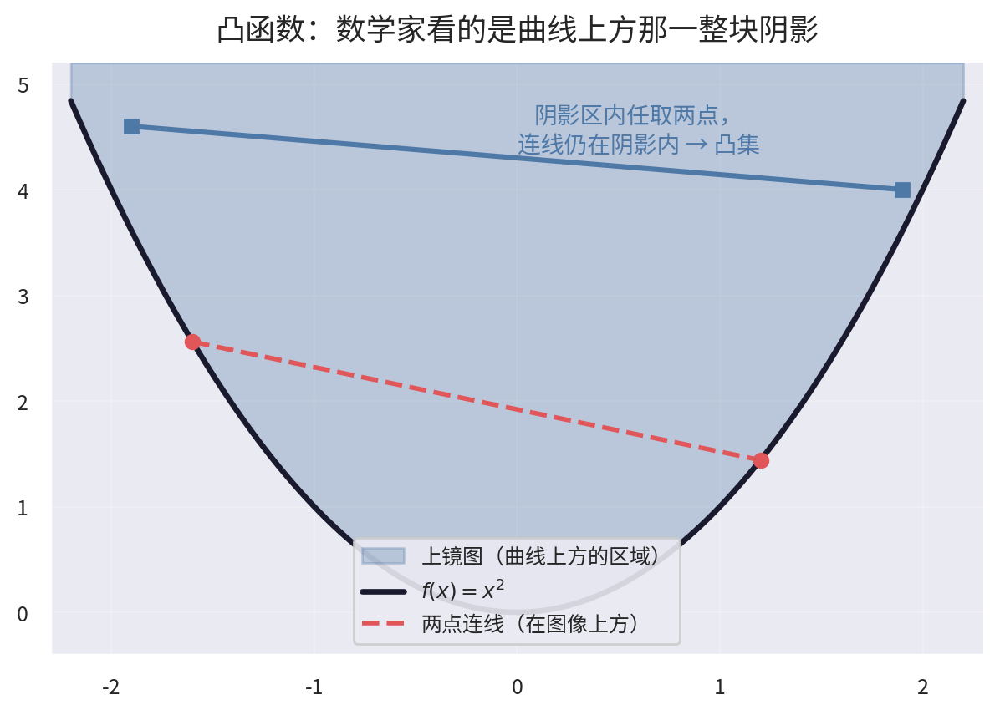
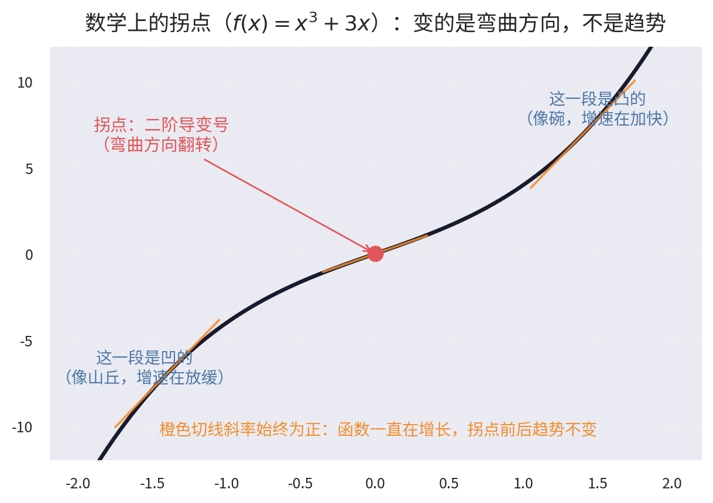
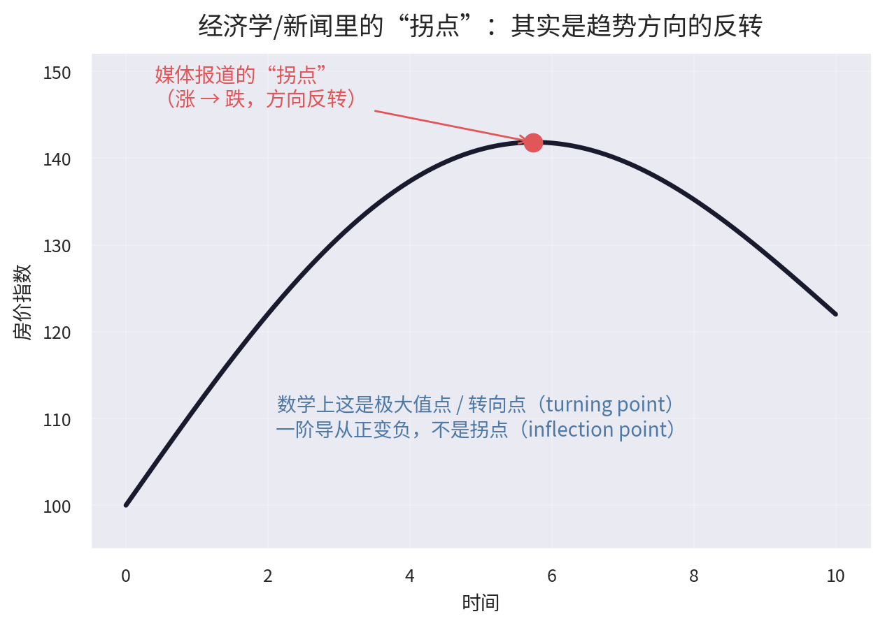
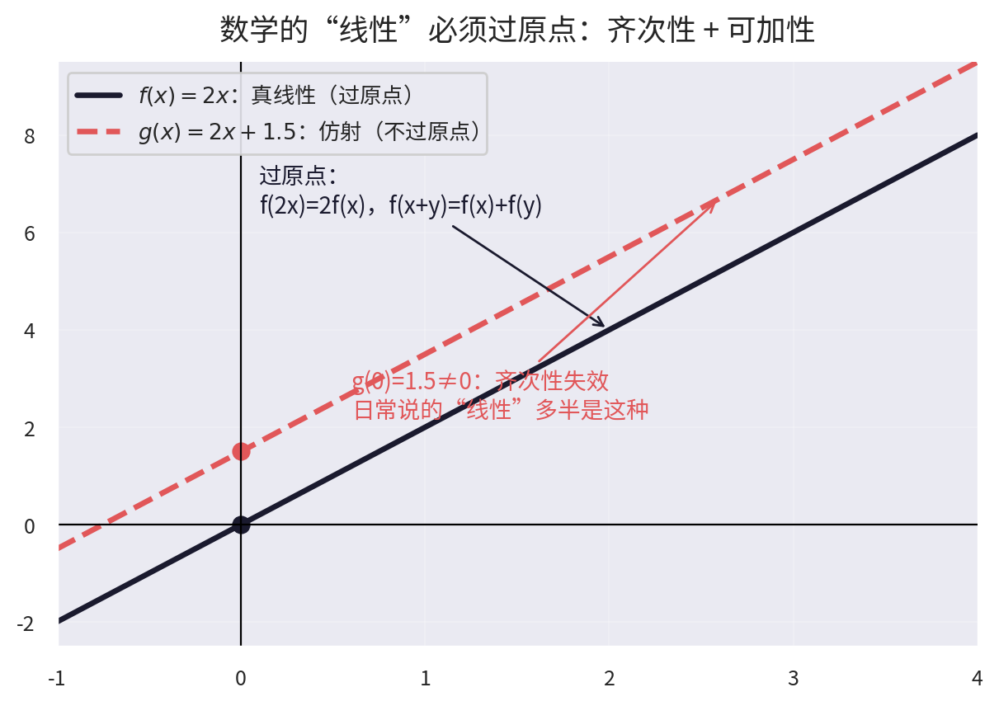
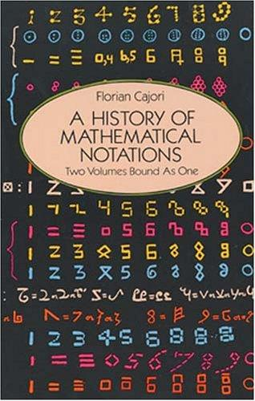
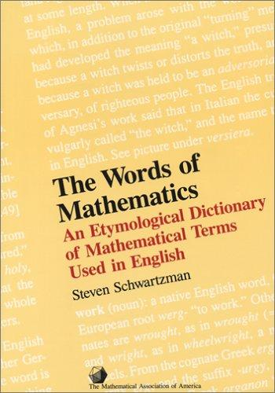

数学语言的错位：从凸函数、拐点到"线性"到底是什么
2026年09月05日 星期六学数学会遇到一类挺隐蔽的麻烦：数学和日常语言共用一批词，意思却经常对不上。
"凸函数"的图像看着明明是凹的；"拐点"在新闻里是一个意思，在数学里是另一个意思；"线性"日常用得更多——"线性思维""线性叙事""线性增长"——但都是比喻义，和数学定义不是一回事。这些错位不是学习者的问题，是命名史留下的坑：谁先发现谁起名，后人懒得改，翻译看心情。
昨天我跟"凸函数"较了一次劲，顺藤摸瓜把这几个词挨个捋了一遍。这篇是捋的过程的记录，也算给同样被这些词绊倒过的人一份备忘。
凸函数为什么看起来是"凹"的
教材说 \(f(x)=x^2\) 是凸函数（convex）。我盯着图像看，那明明是一个向下凹陷的碗，要起名也该叫"凹函数"吧。学微积分的人估计都被这个命名绊过一次。
定义本身倒是没有歧义：
- 凸函数：图像上任意两点的连线（弦），整体在图像上方；
- 凹函数（concave）：图像上任意两点的连线，整体在图像下方。
困惑出在命名的视角上。日常说的"凹/凸"描述的是曲线本身的形状：凸透镜向外鼓，碗向内凹。但数学命名看的根本不是那条线，看的是曲线上方填充出来的整块区域，术语叫上镜图（epigraph）：

把 \(f(x)=x^2\) 图像上方的区域整个涂满，会得到一个碗状的实心区域。在这个区域里任取两点，连线仍然完全落在区域里——这正是凸集的定义。曲线上方是凸集，所以叫凸函数。凹函数对称地看下方：图像下方的区域（hypograph）是凸集，所以叫凹函数。
所以其实两边都没错：直觉没错，曲线确实长得像"凹"；命名也没错，曲线上方那坨阴影确实是"凸"。只是看的不是同一个东西。记法也简单：别盯着线看，盯着线上面那坨阴影看。或者背口诀：凸函数碗口向上，装得住水。
这场较劲还有个后续。有人拿着一张"山丘状"的图来问我：这图明明向上凸出来，怎么会是凹函数？答案还是同一条规则——山丘状图像的连线在曲线下方，曲线下方的阴影区是凸集，所以它是凹函数。名字和长相相反，这不是错觉，是命名本身就和第一眼的直觉拧着。
拐点：数学和经济学各说各话
捋完凸凹，自然会问：既不凸也不凹的函数是什么？答案是绝大多数"有点弯曲"的函数，比如 \(x^3\)、\(\sin x\)。它们的二阶导数会变号，图像上存在拐点（inflection point），拐点两侧凹凸性相反。
数学拐点有一个性质要特别记住，后面的混淆全出在这：拐点只翻转弯曲方向，不翻转趋势。

图里是 \(f(x)=x^3+3x\)。它在原点有个拐点，左侧是凹的（增速放缓），右侧是凸的（增速加快），但橙色切线的斜率始终为正，函数从头到尾都在涨。拐点前在涨，拐点后还在涨，变的只是"涨得越来越慢"切换成"涨得越来越快"。用导数的语言说：拐点看的是 \(f''\) 变号，和 \(f'\) 的符号无关。
然后换到经济学语境，事情就乱了。
微观经济学里谈具体函数时，"拐点"和数学定义是一致的：总成本函数的拐点对应边际成本从递减转为递增，生产函数的拐点对应"边际报酬递减"的起点。这种用法没问题。
但宏观经济和新闻报道里的"拐点"，基本是另一个东西。"房价出现拐点"是说房价从上涨转为下跌；"经济出现拐点"是说增速从下滑转为回升。这是趋势方向的反转，数学上叫极值点或转向点（turning point），跟拐点完全是两回事：

对比一下判定条件：
| 数学拐点 | 经济/新闻"拐点" | |
|---|---|---|
| 看什么变号 | 二阶导数 \(f''\)（弯曲方向） | 一阶导数 \(f'\)（涨跌方向） |
| 趋势本身 | 不变，只是加速变减速（或反之） | 反转，涨变跌或跌变涨 |
| 英文 | inflection point | turning point |
这个混淆很大程度是翻译事故。英文里 inflection point 和 turning point 分得很清楚，中文全译成了"拐点"。字面意思"拐弯的点"，听起来天然像"转向"，于是媒体用法反而成了主流。
这个错位是有实际后果的。下次看到"某某指标出现拐点"的报道，可以多问一句：说的是增速的变化，还是方向的变化？"房价涨幅出现拐点"（涨得慢了，但还在涨）和"房价出现拐点"（开始跌了），对买房决策的含义天差地别，而很多报道故意或无意地模糊这个区别。大部分情况下，媒体说的是后者。
"线性"到底是什么
前两个错位还算"命名视角"和"翻译"的问题，而"线性"（linear）的错位更严重：它大概是数学里最重要的形容词，同时也是日常用法稀释得最厉害的一个。这个词值得往深里聊。
严格定义就两条
数学上，一个映射 \(f\) 是线性的，当且仅当满足两条性质：
- 齐次性（homogeneity）：\(f(\alpha x) = \alpha f(x)\)，输入缩放多少倍，输出就缩放多少倍；
- 可加性（additivity）：\(f(x+y) = f(x) + f(y)\)，输入相加，等于输出各自相加。
就这两条，没有别的。但整个线性代数，本质上就是这两条公理展开出来的。
先看一个很多人踩过的坑：\(f(x)=2x+1.5\) 是不是线性函数？

日常和工程里说"线性"，多半指"图像是一条直线"的关系。媒体爱用的"线性增长"就是典型：它和"指数增长"对举，意思是匀速增加，而匀速增加对应的正是 \(ax+b\) 这种带截距的直线。拿两条公理一检验就出问题了：\(f(0)=1.5 \neq 0\)，齐次性当场失效——输入翻倍，输出并不翻倍（\(f(2)=5.5\)，\(2f(1)=7\)）。这种函数有专门的名字，叫仿射（affine）函数：线性部分加一个平移。真正的线性函数必须过原点，\(f(0)=0\) 是两条公理的直接推论。
日常里另外两个高频用法离数学更远："线性思维"是说人一根筋、只会单因果推导；"线性叙事""线性流程"是说游戏或电影一条固定路线走到底（对应"开放世界"）。取的都是"像直线一样单一、可预期"的比喻义，和两条公理已经没什么关系了。
这个区别不是抠字眼。下面会看到，线性系统那些好用的性质全建立在那两条公理上，平移项会把它们破坏掉（准确点说，需要额外处理）。
几何上看
线性对象是过原点的直线、平面、超平面，推广开就是向量空间（的子空间）。非线性对象是各种弯曲的东西：抛物线、球面、马鞍面、一般的流形。
线性对象有个很特别的性质：在任何局部放大看，结构都和整体一样。直线截一段还是直线，平面切一块还是平的。非线性对象在不同位置可以弯得不一样，前面聊的凹凸性、拐点，都活在这个"弯得不一样"的空间里。可以说前面的"弯曲"全是非线性的具体表现，线性就是"处处不弯"的那个特例。
叠加原理
两条公理合起来，直接推出线性系统最核心的性质——叠加原理：
若 \(x_1\)、\(x_2\) 都是某个线性（齐次）方程的解，那么任意组合 \(c_1 x_1 + c_2 x_2\) 也是解。
也就是说，复杂问题可以拆成简单问题，分别求解，再加回去。部分之和等于整体，没有交叉项，没有意外。靠这一条吃饭的领域有一长串：
- 傅里叶分析：把信号分解成正弦波的叠加，逐个处理再合成，合法性就来自叠加原理；
- 量子力学：薛定谔方程是线性的，态叠加原理是量子理论的基本假设，波函数可以线性组合；
- 电路分析：多个电源作用下的电路，等于各电源单独作用的响应之和（叠加定理）；
- 结构力学、信号处理、机器学习中的线性模型：同理。
非线性系统就没这种好事了：解不能叠加，局部拼不出全局，还可能出现混沌、分岔、涌现这些定性上全新的现象。非线性问题普遍没有通用解析方法，根因也在这。
| 线性 | 非线性 | |
|---|---|---|
| 叠加原理 | 成立 | 一般不成立 |
| 比例性 | 输入翻倍输出翻倍 | 不一定 |
| 典型对象 | 过原点的直线/平面/超平面 | 曲线、曲面、流形 |
| 可预测性 | 高，整体由局部决定 | 低，可能有混沌与突变 |
| 求解 | 有系统方法（高斯消元、矩阵分解……） | 往往无通用解析解 |
线性化：对付非线性的基本战略
线性重要，不是因为世界大体是线性的——恰恰相反，世界几乎处处非线性——而是因为线性是我们手里唯一被彻底驯服的工具。于是整个数学发展出一种基本战略：面对一个非线性对象，先在局部把它线性化，搞清楚，再想办法拼回全局。
这条战略贯穿了整个高等数学：
- 微分本身就是线性化：\(f(x+\Delta x) \approx f(x) + f'(x)\,\Delta x\)，泰勒展开扔掉高阶项，剩下的就是线性近似；
- 微分流形：弯曲的空间在每一点的切空间都是线性空间，微分几何就是在切空间（线性）和流形（非线性）之间来回摆渡；
- 动力系统：研究平衡点附近的行为，第一步就是线性化，看雅可比矩阵的特征值；
- 机器学习：神经网络靠激活函数引入非线性，但每层内部仍是"线性变换 + 非线性激活"的交替，梯度反传全程是链式法则下的线性近似。
回头看第一节的凸函数，它和线性也有联系：线性函数是"最直的"，凸函数是"只朝一个方向弯的"，优化的版图大致按"线性 → 凸 → 非凸"这条难度递增的阶梯来排。凸优化比较成熟，正因为凸性是离线性最近的一种弯曲。
这类词还有一长串
把三处错位摆在一起，模式是一样的：
| 词 | 日常/媒体含义 | 数学含义 | 错位根源 |
|---|---|---|---|
| 凸函数 | 向外鼓起的曲线 | 曲线上方区域是凸集 | 命名视角：看阴影而非看线 |
| 拐点 | 趋势反转（涨转跌） | 二阶导变号，弯曲方向翻转 | 翻译事故：inflection/turning 混译 |
| 线性 | 像直线一样单一可预期（线性思维/叙事/增长） | 齐次性 + 可加性，必过原点 | 术语下沉：严格定义被比喻化挪用 |
数学里这种词还有一长串："单群"（simple group）名字像"简单的群"，有限单群的分类定理写了上万页；"虚数"一点都不虚幻，电路和量子力学里比谁都"真实"；"无理数"的 irrational 原意是"不能写成整数之比"，和"不理性"无关，翻译背锅；"几乎处处"听起来含糊，其实是测度论里的精确术语，允许筛掉的例外点可以多达整个有理数集；"法向量"的 normal 来自拉丁语"垂直的"，和"正常"毫无关系……
数学命名史就是一部"先随便起个名，后人懒得改，翻译看心情"的历史。所以被这些词绊倒不用怀疑自己的直觉——直觉往往是对的，只是词义在几百年间悄悄漂走了。应对方法也只有一条：不要从名字推测含义，回到定义。名字是历史的包袱，定义才是真理。
顺带聊聊符号
名字之外，还有一层更深的东西：符号。这也是我学数学的另一个窍门——读不懂式子的时候，去研究符号本身。
名字是语言的包袱，符号则是设计的产物。同一个数学对象用哪套符号来写，阅读体验天差地别。我之前那篇《加权求和式子的各种写法》就是个小例子：同样是"加权求和"，数学写 \(\sum_i w_i x_i\)，物理写爱因斯坦求和约定 \(w_i x^i\)，工程写 \(\mathbf{w}^\top\mathbf{x}\)，机器学习写成一行 np.dot(w, x)——本质完全等价，但每种写法都带着本学科的语境和意图。论文看不懂，很多时候不是概念不懂，是符号的"方言"没对上。所以式子读得卡壳时，可以多问一句：这个符号为什么这么设计？它想凸显什么、隐藏什么？想通这个，式子往往自己就开始说话了。
专门讲数学符号的书不多，确实有几本，顺手推荐一下：
| 封面 | 书 | 一句话介绍 |
|---|---|---|
| 《数学符号史》，徐品方、张红，科学出版社 | 中文世界少有的专门著作，考证了 200 余个符号的来龙去脉，从记数符号一路讲到高等数学，吴文俊评价其"填补了空白"。 | |
 |
A History of Mathematical Notations, Florian Cajori | 这个领域的奠基之作（1928–29 两卷，Dover 有合订本）。查任何一个符号的源流，最后的参考文献多半指向它。 |
 |
The Words of Mathematics, Steven Schwartzman | 数学英语术语的词源词典——normal 为什么是"垂直"、irrational 为什么是"不成比"，正好回应本文的"名称错位"主题。 |
| 《数学符号理解手册》，黑木哲德，学林出版社 | 轻松向的入门读物，从小学算术的 \(+\)、\(-\) 一路讲到微积分的 \(\int\) 为什么长成钩子模样，适合随手翻。 |
最后讲个今天刚听到的故事，和全文正好呼应。今天刷到一个讲差分机的视频，里面提到巴贝奇（Charles Babbage）——对，就是那位"计算机先驱"——年轻时最耿耿于怀的事之一，是英国人死守牛顿的微积分符号，不肯用莱布尼茨的。牛顿把导数记作 \(\dot{y}\)（头上一个点），莱布尼茨记作 \(dy/dx\)。符号之争背后是优先权之争的意气：英国数学界抱着牛顿的"点"不放，几乎不读用莱布尼茨符号写的大陆文献，结果在欧洲大陆分析学飞速发展的一百年里，英国几乎全程掉队。
1812 年，还在剑桥念书的巴贝奇拉上赫歇尔（John Herschel）和皮科克（George Peacock）成立了"分析学会"（Analytical Society）。学会的宗旨用巴贝奇自己的著名双关语说，是推行"纯粹的 d 主义（d-ism），对抗大学的点代昏庸（dot-age）"：d-ism 谐音 deism（自然神论，当时的进步思潮），dot-age 谐音 dotage（老糊涂）。他们翻译法国教材，皮科克后来当上剑桥 Tripos 考试的出题人，干脆只用莱布尼茨符号命题——不会你就别想拿荣誉学位。没几年，\(dy/dx\) 就赢下了这场百年符号战争，英国数学才重新接上欧洲大陆的轨道。
你看，这和前面的"名称错位"是同一枚硬币的两面：名字起得再随意，咬咬牙记住定义就行；符号是天天上手用的工具，它的好坏会被放大成一代人的效率。所以结论可以从一句扩成两句：名字是历史的包袱，定义才是真理；符号是定义的外衣，外衣裁得合体，一个时代的人都能走得更轻快。